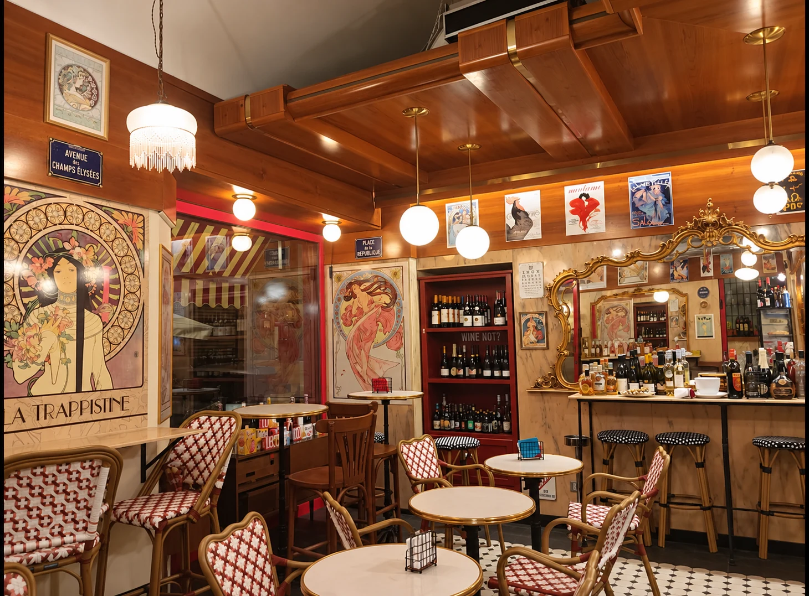

01Bonjour
Le Matin
Petit-déjeuner
Martedì – Domenica
08:00 — 10:30
Lunedì chiuso
Il risveglio parigino in Via Saluzzo. Il caffè, una colazione lenta e una giornata tutta da scrivere.
Comincia da un bonjour su InstagramCafé Bistrot & Salon Littéraire
Un piccolo angolo di Francia,
nel cuore di San Salvario.
Il profumo del caffè, un calice di vino, le pagine di un libro. In Via Saluzzo 32, c’è un posto dove il tempo ha un altro sapore.
5,0 / 5 su Google (oltre 105 recensioni) · San Salvario, Torino Scrivici su Instagram per prenotareL’esprit des lieux
Ci sono luoghi in cui si entra.
E luoghi in cui si resta.
Legno caldo, specchi dorati, manifesti d’altri tempi. Una sedia intrecciata, i tavolini vicini e una conversazione che si allunga. Da Chez Cosette, la Francia incontra Torino con la naturalezza delle cose belle.

Les rendez-vous de Cosette
Dal primo caffè alle luci della sera.
A ogni ora, la sua piccola felicità.
Petit-déjeuner
Martedì – Domenica
08:00 — 10:30
Lunedì chiuso
Il risveglio parigino in Via Saluzzo. Il caffè, una colazione lenta e una giornata tutta da scrivere.
Comincia da un bonjour su InstagramApéro & Bistrot
Martedì – Domenica
18:40 — 22:00
Con prolungamento serale nei weekend
Un calice di vino, piatti caldi della tradizione francese e luci soffuse. La sera si fa conversazione.
Prenota il tuo tavolo su Instagramdu Dimanche
Tre domeniche al mese
10:30 — 15:00
Su prenotazione
L’appuntamento lento della domenica. Il piacere di ritrovarsi a tavola, senza guardare l’orologio.
Scopri le date del Brunch su InstagramPer un tavolo o per la prossima domenica insieme.
Scrivici su Instagram per prenotare o scoprire le date del BrunchLe nom, l’histoire
In francese, chez significa “da”, “a casa di”.
Chez Cosette è, semplicemente,
“Da Cosette”.
Il nome è già un invito.
Tra le pagine di Victor Hugo
Sandra Ansaldi ha scelto Cosette, uno dei personaggi centrali de I Miserabili di Victor Hugo, come anima e ispirazione del suo bistrot.
Una figura che porta con sé la possibilità di cambiare il proprio destino: trasformazione, rinascita, riscatto e accoglienza.
È questo lo spirito di Chez Cosette. Un piccolo salotto aperto alle storie, agli incontri e a chi cerca un posto in cui sentirsi a casa.
Una storia tra le pagine.Una casa, in Via Saluzzo.
Une invitation, pour vous
Porta qualcuno che ami. O soltanto un buon libro.
Rendez-vous
Un tavolo anche per unoDa soli, in ottima compagnia. Per il tuo solo dining, un libro e il piacere di stare bene.
Piccole comoditàAccettiamo carte e pagamenti digitali.
Et si on se retrouvait ?
Scrivici su Instagram per prenotare